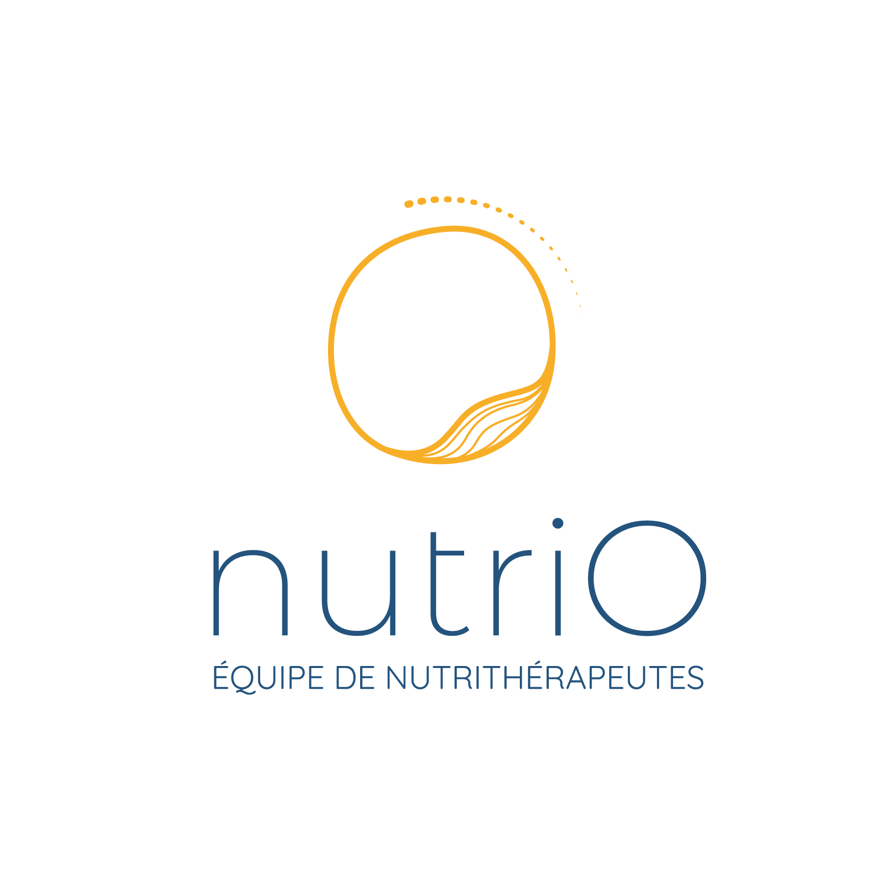

BIENVENUE au centre KinéFlagey
Cabinet de kinésithérapie à Flagey, Ixelles
Soins personnalisés dans un cabinet à taille humaine, une équipe qui vous écoute dans une ambiance conviviale.

Nos domaines d'intervention
Sportive
Ostéopathie
Périnatale
Périnéale
ATM
Viscérale
Orthopédie

Le point de départ
Kinésithérapie générale
Une discipline qui utilise le mouvement pour traiter et rééduquer diverses affections.
La kinésithérapie générale peut avoir un objectif thérapeutique (récupération optimale des fonctions motrices) ou préventif (réduction des risques de récidive).
Nos traitements incluent :
- Techniques manuelles : étirements, mobilisations articulaires
- Rééducation post-traumatique (hors sport)
- Pathologies neurologiques (hémiplégie, etc.)
- Maintien de l'autonomie des personnes âgées
Que ce soit pour soulager une douleur, améliorer votre mobilité ou prévenir des blessures, nous adaptons chaque prise en charge à vos besoins. Nous accordons une place centrale au travail actif et aux exercices, afin de rendre le patient acteur de sa rééducation.
Praticiens spécialisés


Thérapie Manuelle
Ostéopathie
Une approche manuelle globale pour restaurer l'équilibre du corps.
L’ostéopathie est une thérapie manuelle qui vise à rétablir l’équilibre du corps et à améliorer sa mobilité.
L’ostéopathie s’adresse aux :
- Douleurs musculaires et articulaires (lombalgies, cervicalgies…).
- Troubles fonctionnels (migraines, digestions…).
- Suivi des sportifs.
L’ostéopathie s’intègre parfaitement dans une prise en charge pluridisciplinaire. Elle permet de soulager, prévenir et améliorer la qualité de vie grâce à une approche globale et personnalisée.
Praticiens spécialisés

Performance & Récupération
Kinésithérapie sportive
Plus poussée que la kinésithérapie générale pour le bien-être des sportifs.
Spécialisée dans la prise en charge des pathologies liées à l’activité physique, la kinésithérapie sportive vise à traiter, prévenir et réhabiliter les blessures chez les sportifs, amateurs ou professionnels.
Nos domaines d’intervention :
- Traitement des blessures aiguës .(entorses, claquages, déchirures)
- Rééducation des tendinopathies et surutilisation musculaire.
- Préparation physique et prévention des récidives.
Nous travaillons à optimiser vos performances et à vous aider à retrouver rapidement votre niveau d’activité.
Praticiens spécialisés
Maternité & Bien-être
Kinésithérapie pré/post-natale
Un accompagnement sur mesure pour les futures et jeunes mamans.
La kinésithérapie périnatale accompagne les femmes tout au long de leur grossesse et après l’accouchement.
- Préparation à l’accouchement : techniques respiratoires et gestion des efforts pour vivre sereinement cet événement.
- Rééducation post-natale : récupération de la tonicité abdominale et périnéale pour prévenir les troubles liés à la grossesse.
Un suivi adapté contribue à améliorer le bien-être de la mère et à favoriser une récupération optimale.
Praticiens spécialisés


Spécialisation
Kinésithérapie maxillo-faciale
Soulagement des douleurs et troubles de la mâchoire (ATM).
Cette spécialisation traite les dysfonctionnements de l’articulation temporo-mandibulaire (ATM), essentielle à des fonctions comme la mastication et la parole.
Indications courantes :
- Douleurs de la mâchoire ou de la nuque.
- Céphalées liées à des tensions musculaires.
- Troubles post-traumatiques ou post-dentaires.
Nos techniques permettent de réduire les douleurs et d’améliorer la mobilité pour un confort quotidien retrouvé.
Praticiens spécialisés

Santé Pelvienne
Rééducation périnéale
Traitement des dysfonctions du périnée pour un mieux-être global.
La rééducation périnéale est une prise en charge dédiée aux dysfonctions des muscles du périnée, pouvant entraîner divers troubles tels que l'incontinence urinaire ou anale, le prolapsus, les douleurs périnéales, les troubles lors des rapports, la constipation, entre autres.
Elle ne se limite pas uniquement au travail des muscles du périnée. La prise en charge inclut également un apprentissage de la bonne utilisation du muscle transverse, étroitement lié au périnée, ainsi qu'un travail global du corps, prenant en compte les postures et certaines habitudes du quotidien pouvant influencer le bon fonctionnement du périnée.
Nos interventions incluent :
- Techniques manuelles adaptées
- Travail de perception et de contrôle du périnée et du muscle transverse
- La rééducation après l’accouchement.
- Travail global du corps : rééducation des habitudes posturales et fonctionnelles
- Rééducation à l'aide d'un appareil de biofeedback (si nécessaire)
Chaque prise en charge est personnalisée, réalisée dans un cadre respectueux et bienveillant, et adaptée à vos besoins et à votre rythme.
Praticiens spécialisés

Rééducation
Orthopédie & Traumatologie
Récupération optimale après une blessure ou une chirurgie.
Nous accompagnons nos patients dans leur rééducation après :
- Fractures.
- Entorses et luxations.
- Chirurgies orthopédiques (prothèses, ligamentoplasties).
Notre objectif : restaurer votre mobilité et votre autonomie grâce à des protocoles adaptés, alliant thérapie manuelle et exercices spécifiques.
Praticiens spécialisés

Approche Holistique
Kinésithérapie viscérale
Traitement manuel des organes pour un meilleur équilibre fonctionnel.
La kinésithérapie viscérale se concentre sur le traitement des organes internes pour améliorer leur mobilité et leur fonction.
Indications courantes :
- Troubles digestifs (constipation, reflux).
- Douleurs pelviennes chroniques.
- Problèmes respiratoires liés à la mobilité diaphragmatique.
Grâce à des techniques manuelles spécifiques, nous aidons à restaurer l’équilibre et la fonctionnalité de vos organes pour un bien-être global.
Praticiens spécialisés
Nos services complémentaires
Pilates

Le Pilates est une méthode douce mais efficace qui vise à renforcer les muscles profonds, améliorer la posture, et augmenter la souplesse.
Nos cours collectifs de Pilates sont conçus pour tous les niveaux, que vous soyez débutant ou pratiquant confirmé.
Pourquoi choisir le Pilates ?
-
Renforcement musculaire : Travail ciblé des muscles stabilisateurs, notamment ceux du dos, de l’abdomen, et du plancher pelvien.
-
Amélioration de la posture : Rééquilibre musculaire pour soulager les tensions et prévenir les douleurs.
-
Souplesse et mobilité : Étirements progressifs pour favoriser l’amplitude de mouvement et la fluidité.
-
Gestion du stress : Une pratique calme et contrôlée qui améliore la concentration et favorise le bien-être mental.
Les spécificités de nos cours :
-
Encadrement professionnel : Chaque séance est animée par un kinésithérapeute formé en Pilates, garantissant une pratique adaptée et sécurisée.
-
Petit groupe : Pour un suivi personnalisé et une meilleure qualité d’accompagnement.
-
Adaptation individuelle : Les exercices sont modulés en fonction des besoins et des capacités de chaque participant.
Nutrition

Nous proposons un accompagnement personnalisé en nutrition pour vous aider à optimiser votre santé, vos performances sportives, et votre bien-être global.
Grâce à une approche basée sur vos besoins individuels, nous élaborons des solutions adaptées pour atteindre vos objectifs, qu’il s’agisse d’une amélioration de l’énergie, de la récupération, ou de la gestion du poids.
En savoir plus :
nutrio.be

Analyse de la course à pied
Nous avons suivi des formations spécialisées auprès de La Clinique du Coureur, une référence mondiale en prévention des blessures liées à la course à pied.
Notre expertise nous permet d’offrir un accompagnement personnalisé aux coureurs de tous niveaux.
Nos séances incluent :
Analyse de la course sur tapis
Observation de la technique de course, cadence, et biomécanique pour détecter les éventuels déséquilibres ou inefficacités.
Évaluation spécifique
Contrôle moteur, tests de mobilité, force, stabilité du tronc (core stability), et souplesse pour identifier les axes d’amélioration.
Conseils & Prévention des blessures
Exercices adaptés à vos besoins, recommandations sur le choix de chaussures et ajustements techniques pour réduire les risques de blessure.
Programme d’entraînement
Élaboration d’un plan adapté à vos objectifs, qu’il s’agisse de performance, d’endurance, ou de récupération après une blessure.
Nos techniques & approches
Thérapie Manuelle
Dry Needling
Crochetage
Ondes de choc
Thérapie Manuelle
La thérapie manuelle orthopédique est une spécialisation dédiée aux troubles du système neuro-musculo-squelettique. Elle s’appuie sur des techniques de traitement fondées sur des preuves scientifiques pour soulager la douleur et restaurer une fonction optimale.
Nos interventions incluent :
- Mobilisations articulaires
- Techniques passives et activo-passives
- Exercices de contrôle moteur spécifiques
Nous adoptons une approche globale du patient, intégrant les dimensions biologiques, psychologiques et sociales pour une prise en charge complète et durable.
Dry Needling
Le Dry Needling est une technique efficace pour soulager les douleurs musculaires et traiter les points trigger.
Indications :
- Contractures chroniques
- Douleurs myofasciales
- Réduction des tensions musculaires profondes
Crochetage
Le crochetage est une méthode de traitement myofascial utilisant des outils spécifiques pour :
- Libérer les adhérences tissulaires
- Réduire les douleurs chroniques et inflammatoires
- Restaurer la mobilité des tissus
Ondes de choc
Les ondes de choc sont une technique innovante pour traiter les douleurs chroniques et stimuler la régénération tissulaire.
Indications :
- Tendinopathies (épaule, coude, talon)
- Enthésopathies
- Points de calcification
Cette technologie permet une guérison accélérée et une amélioration notable des douleurs musculo-squelettiques.


Notre équipe

Gilles PIRAUX
Kiné du sport, Ostéopathe

Maria KALALA BELTRAN
Uro-gynécologie

Olivier VAN ROY
Kiné du sport

Fanny GARO
Uro-gynécologie

Simon LE CLEF
Ostéopathe

Mathilde ESCOYEZ
Kiné générale

Thomas BASTARD
Kiné du sport, Course à pied

Marie Inès KONINCKX
Kiné générale
Aucun praticien ne correspond aux filtres sélectionnés.
Le cabinet
140 m²
dédiés à votre santé3 salles
de soins individuelsNotre cabinet vous accueille dans un espace moderne et entièrement équipé, pensé pour votre confort et une rééducation optimale.
Un plateau technique complet :
Tapis de course, vélos, reformer Pilates, ondes de choc, pressothérapie, et tout le matériel nécessaire (Bosu, Swiss-ball, etc.) pour une rééducation efficace et une préparation sportive de pointe.


let’s stay in touch !
Contact & infos pratiques
Une question ? un conseil ?
Si nous ne vous répondons pas immédiatement, privilégiez de nous laisser un sms, nous essayerons de vous recontacter le plus rapidement possible.
Si vous avez besoin d’information, vous pouvez également nous envoyer un mail via notre formulaire ou directement à info@kineflagey.com.
Horaires
- Lundi – Vendredi :
- 08:00 – 19:30 (sur rendez-vous)
Venir au cabinet
- 38, 60, 71 – Malibran (en face)
- 95, 60 – Blyckaerts (270m)
- 59 – Wery (350m) / Flagey (400m)
- 81 – Flagey (400m)
Questions fréquentes
Comment prendre rendez-vous ?
- En ligne : via Rosa.be
- Par message : SMS ou WhatsApp (voir la fiche praticien dans l'équipe)
- Par e‑mail : info@kineflagey.com
Nous n’avons pas de secrétaire : nous privilégions ces moyens de contact pour préserver la qualité des séances.
Le cabinet est-il conventionné ?
Oui. Tous les kinésithérapeutes qui travaillent chez nous sont conventionnés.
Le cabinet est-il accessible aux personnes à mobilité réduite ?
Oui, le cabinet est accessible aux personnes à mobilité réduite (rez‑de‑chaussée). Si vous avez un besoin spécifique, indiquez‑le lors de la prise de rendez‑vous.
Que dois‑je amener à ma première séance ?
- Carte d’identité (si nouveau patient)
- Prescription médicale
- Examens complémentaires (radios, IRM...)
- Tenue confortable
Apportez tout document utile pour la bonne compréhension de votre situation par le praticien.
Puis‑je annuler ou déplacer mon rendez‑vous ?
Oui, il est possible de modifier ou annuler un rendez‑vous au moins 24 heures à l'avance. Toute séance non annulée à temps pourra être facturée.
Quelle est la durée d’une séance ?
Les séances durent généralement 30 à 60 minutes, selon le type de prise en charge.
Quels moyens de paiement acceptez‑vous ?
- Virement bancaire
- Paiement via l’application Bancontact
Nous n'avons pas de terminal de paiement.
Quand commencer ma rééducation post‑partum ?
La rééducation post‑partum s'effectue généralement entre 4 et 6 semaines et nécessite une prescription médicale.
J'ai accouché par césarienne, est‑ce nécessaire de faire une rééducation périnéale ?
Oui, il est recommandé de réaliser un bilan pour évaluer la nécessité d'une rééducation périnéale spécifique. La grossesse et l'accouchement peuvent fragiliser le plancher pelvien.
Puis‑je venir avec mon bébé ?
Oui, vos bébés sont les bienvenus. Le cabinet dispose d'un relax et d'un tapis de jeux.